eFriend
Το eFriend είναι ένα μικρό ρομπότ που ζει μέσα στο Expenity. Του λέτε τι θέλετε να αγοράσετε, εξετάζει τα πορτοφόλια, το εισόδημα, τους λογαριασμούς και τον τρόπο που πραγματικά ξοδεύετε και σας λέει, ευγενικά και με αστεία, αν μπορείτε να το αντέξετε και πότε. Ανήκει στο πρόγραμμα Advanced και ενεργοποιείται ή απενεργοποιείται από το Περισσότερα → Κάντε το δικό σας → Δυνατότητες.
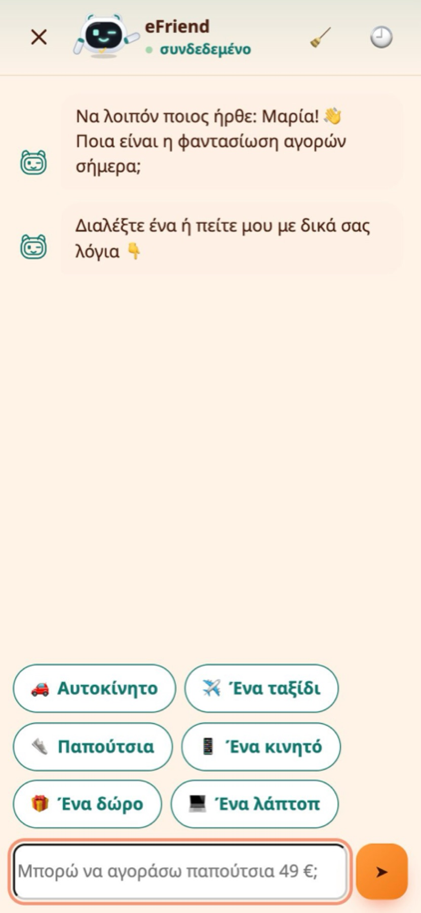
🔒 Όλα όσα υπολογίζει το eFriend γίνονται στη συσκευή σας. Οι αριθμοί σας δεν στέλνονται πουθενά για ανάλυση.
Ρωτήστε το eFriend: η συζήτηση#
Πατήστε 💬 Ρωτήστε στην Αρχική ή στη σελίδα του eFriend ή ανοίξτε το μενού + και επιλέξτε Ρωτήστε το eFriend. Ανοίγει μια συζήτηση σε ολόκληρη την οθόνη και το eFriend σας παίρνει «συνέντευξη»:
- 🛍️ Τι θέλετε να αγοράσετε;
- 💶 Πόσο κοστίζει;
- ⏰ Πόσο σύντομα το χρειάζεστε: άμεσα, σε λίγες εβδομάδες ή χωρίς βιασύνη;
Μπορείτε να τα γράψετε όλα σε μία πρόταση, για παράδειγμα «Θέλω να αγοράσω ένα ρολόι για τη φίλη μου, 450, σε 2 εβδομάδες». Το eFriend βρίσκει το αντικείμενο, την τιμή, το πρόσωπο για το οποίο το αγοράζετε και το χρονικό περιθώριο και ρωτά μόνο όσα λείπουν. Αν προτιμάτε να μην πληκτρολογείτε, πατήστε μία από τις γρήγορες απαντήσεις.
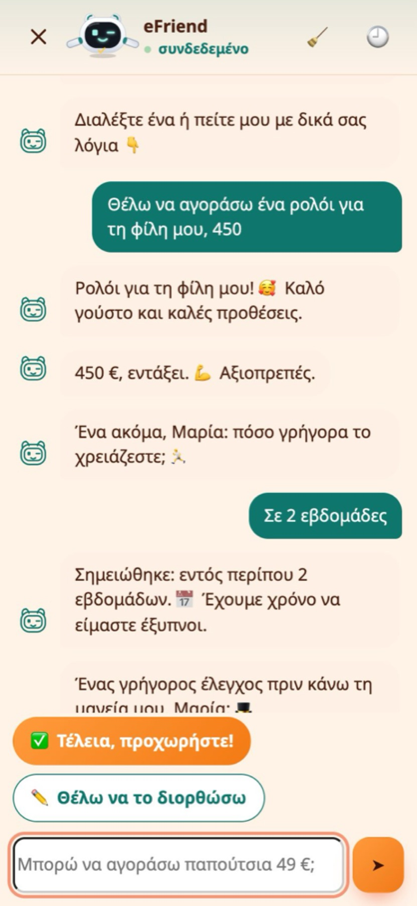
Πριν ξεκινήσει, το eFriend σας το λέει πίσω και ρωτά αν το κατάλαβε σωστά. Λάθος; Γράψτε τη διόρθωση με απλά λόγια, όπως «όχι, είναι 1250» ή «σε 3 εβδομάδες», ή πατήστε ✏️ Θέλω να το διορθώσω.
Έπειτα το eFriend «σκέφτεται» για λίγα δευτερόλεπτα και σας φέρνει πίσω στην εφαρμογή με την πλήρη εικόνα.
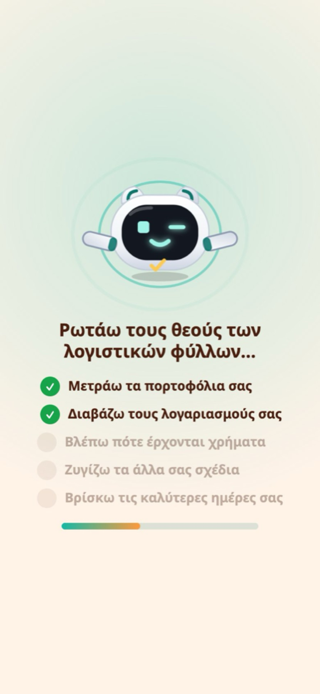
Η απάντηση#
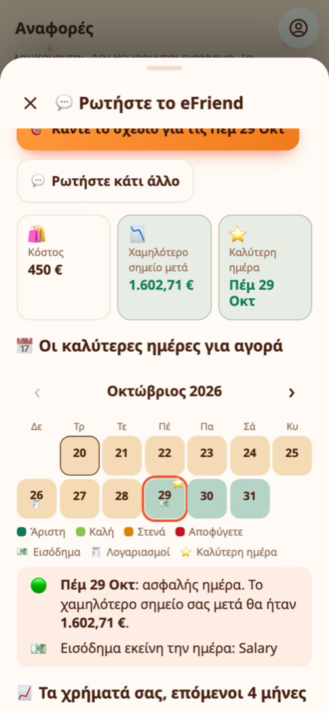
- ✅ Η απάντηση για σήμερα: μπορείτε να το αγοράσετε σήμερα και πόσο χαμηλά θα έπεφταν τα χρήματά σας μετά;
- 🎯 Κάντε το σχέδιο βρίσκεται στην κορυφή, ήδη συμπληρωμένο με το αντικείμενο, την τιμή και την καλύτερη ημερομηνία.
- ⭐ Η καλύτερη ημέρα: η πρώτη ημέρα που ταιριάζει, μέσα στο χρονικό περιθώριο που δώσατε όταν είναι δυνατό. Αν τίποτα δεν ταιριάζει με το περιθώριό σας, το eFriend το λέει και δείχνει την πρώτη ασφαλή ημέρα.
- 🗓️ Αν δεν υπάρχει ασφαλής ημέρα στους επόμενους 4 μήνες, το eFriend δεν δείχνει καμία ημερομηνία. Εξηγεί το γιατί, για παράδειγμα ότι ξοδεύετε περισσότερα από όσα κερδίζετε, και πόσα θα έπρεπε να βάλετε στην άκρη.
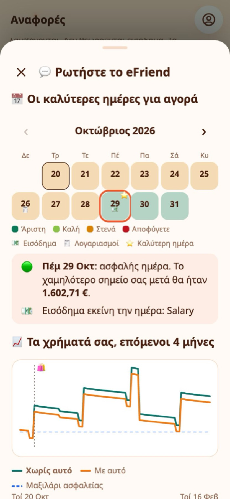
Το ημερολόγιο δείχνει έναν μήνα τη φορά, ανοιγμένο στην καλύτερη ημέρα. Με τα βέλη ‹ › πηγαίνετε σε προηγούμενους ή επόμενους μήνες. Οι ημέρες χρωματίζονται ανάλογα με το πόσο ασφαλείς είναι: Άριστη, Καλή, Στενά ή Αποφύγετε. Το 💶 σημαδεύει μια ημέρα πληρωμής και το 🧾 έναν λογαριασμό. Πατήστε μια ημέρα για να δείτε γιατί πήρε αυτό το χρώμα· το κουμπί του σχεδίου ακολουθεί την ημέρα που επιλέγετε.
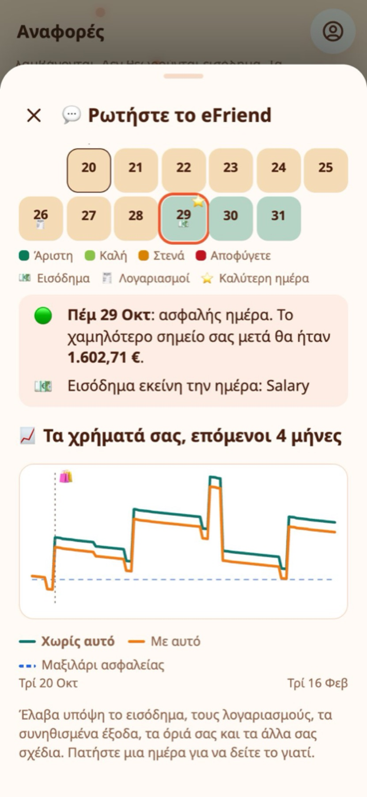
Το γράφημα δείχνει το εκτιμώμενο υπόλοιπό σας, ημέρα με την ημέρα, με και χωρίς την αγορά, και το μαξιλάρι ασφαλείας σας ως διακεκομμένη γραμμή.
Παράδειγμα από την πραγματική ζωή
Η Μαρία γράφει «λάπτοπ 900» και πατά Σε 2 εβδομάδες. Το eFriend λέει ότι σήμερα είναι στενά, αλλά η 29η, λίγες ημέρες μετά την ημέρα πληρωμής, είναι ασφαλής. Πατά Κάντε το σχέδιο για Πέμ 29 Οκτ.
Ξεκινήστε από την αρχή και προηγούμενες συζητήσεις#
- 🧹 Ξεκινήστε από την αρχή (η σκούπα στην κορυφή) καθαρίζει τη συζήτηση και το eFriend κάνει ένα αστείο γι’ αυτό.
- 🕘 Προηγούμενες συζητήσεις κρατά τις τελευταίες 30 συζητήσεις σας, ολοκληρωμένες ή όχι. Πατήστε μία για να τη διαβάσετε και μετά Ρωτήστε ξανά για να ελέγξετε το ίδιο αντικείμενο με τους σημερινούς αριθμούς ή διαγράψτε την με τον κάδο.
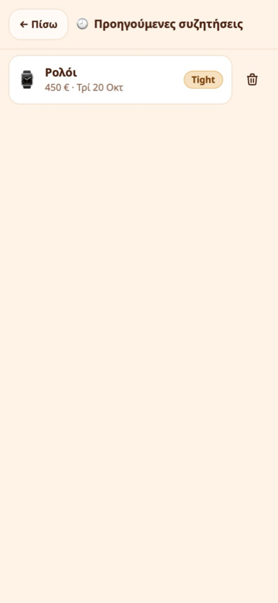
Ξέρει το όνομά σας#
Αν έχετε δώσει το όνομά σας στο Expenity, το eFriend χρησιμοποιεί το μικρό σας όνομα στα αστεία, τις ερωτήσεις και τις απαντήσεις του, στη συζήτηση και στην Αρχική. Χωρίς όνομα σας μιλά απλά απευθείας.
Την πρώτη φορά: μια σύντομη περιήγηση#
Την πρώτη φορά που ανοίγετε το eFriend, μια περιήγηση σε ολόκληρη την οθόνη το συστήνει. Ρωτά μόνο όσα χρειάζεται ακόμα:
- 💶 Εισόδημα: πότε έρχονται τα χρήματά σας (παραλείπεται αν το έχετε ήδη προσθέσει).
- 📊 Όρια δαπανών: το μέγιστο που νιώθετε άνετα να ξοδεύετε ημερησίως, εβδομαδιαίως και μηνιαίως.
- ✈️ Επιθυμίες: πράγματα που θέλετε, ως σχέδια.
- 🧾 Προϋπολογισμοί, 🏆 προτεραιότητες και 🔁 πώς μπορεί το eFriend να μετακινεί χρήματα.
Μπορείτε να την παραλείψετε και να επανέλθετε όποτε θέλετε από τη σελίδα του eFriend.
Όρια δαπανών που συμπληρώνονται μόνα τους#
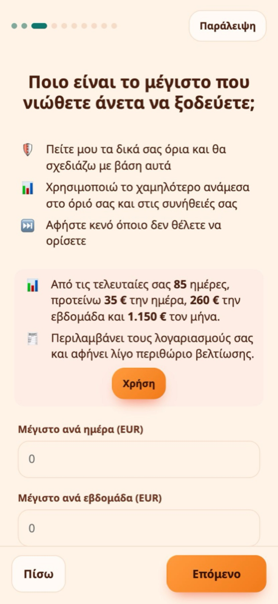
- 📈 Με δύο εβδομάδες ή περισσότερο ιστορικό, το eFriend προτείνει ημερήσιο, εβδομαδιαίο και μηνιαίο όριο από τις πραγματικές σας δαπάνες, με τους λογαριασμούς και λίγο κάτω από όσα συνήθως ξοδεύετε. Πατήστε Χρήση.
- 🌱 Με λιγότερο ιστορικό, γράψτε ένα όριο σε οποιοδήποτε πεδίο και πατήστε Χρήση για να συμπληρωθούν τα άλλα δύο από αυτό.
- ✏️ Μπορείτε πάντα να αλλάξετε μόνοι σας τους αριθμούς.
Σχέδια και εκτιμήσεις#
Ένα σχέδιο είναι κάτι που θέλετε να αγοράσετε μέχρι μια ημερομηνία. Το eFriend δίνει σε κάθε σχέδιο μία από πέντε εκτιμήσεις:
| Εκτίμηση | Τι σημαίνει |
|---|---|
| Comfortable | Χωράει εύκολα και αφήνει άθικτο το μαξιλάρι ασφαλείας σας. |
| On track | Χωράει. |
| Tight | Χωράει, αλλά με λίγο περιθώριο. |
| At risk | Μπορεί να μη χωρά αν δεν αλλάξει κάτι. |
| Unlikely | Δεν χωράει μέχρι αυτή την ημερομηνία. |
Τα ονόματα των εκτιμήσεων μένουν στα αγγλικά σε κάθε γλώσσα. Αν ξοδεύετε περισσότερα από όσα κερδίζετε, το eFriend το λέει ξεκάθαρα και εξετάζει πόσο θα διαρκέσουν όσα απομένουν, ώστε ένα σχέδιο να μην φαίνεται πλέον άνετο με έναν μισθό που δεν καλύπτει τις δαπάνες σας.
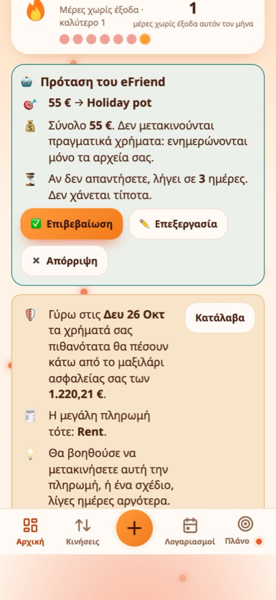
Πατήστε ένα σχέδιο για την πλήρη ανάλυση:
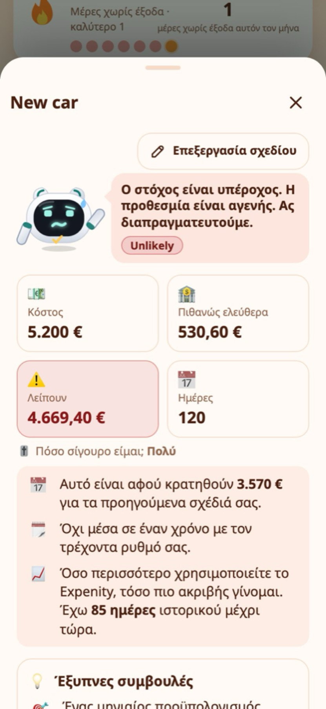
- 💰 πόσα αναμένεται να έχετε ελεύθερα μέχρι την ημερομηνία
- 🛡️ πόσα κρατιούνται ως μαξιλάρι ασφαλείας
- 📅 η πρώτη ασφαλής ημερομηνία
- 💡 έξυπνες συμβουλές, για παράδειγμα ένας μικρός μηνιαίος προϋπολογισμός που θα βοηθούσε
Προτεραιότητες και μαξιλάρι ασφαλείας#
Όταν πολλά σχέδια διεκδικούν τα ίδια χρήματα, το eFriend ρωτά ποιο έχει μεγαλύτερη σημασία. Σύρετε τα σχέδια στη σειρά που θέλετε (στο κινητό, πατήστε παρατεταμένα μια γραμμή). Η σειρά είναι πάντα δική σας: το eFriend δεν παραλείπει ποτέ μόνο του ένα σχέδιο.
Το ✨ Να προτείνει το eFriend ρωτά τι μπορεί να αλλάξει:
- 📋 Μόνο τη σειρά των σχεδίων σας, με το φθηνότερο πρώτο.
- 🛡️ Τη σειρά και το μαξιλάρι ασφαλείας, για το καλύτερο αποτέλεσμα. Το eFriend δοκιμάζει διάφορα μαξιλάρια και κρατά το μεγαλύτερο που αφήνει να λειτουργούν όσο το δυνατόν περισσότερα σχέδια.
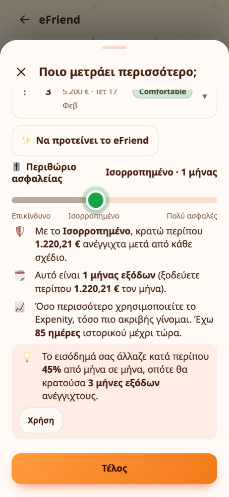
Το μαξιλάρι ασφαλείας είναι πόσους μήνες συνηθισμένων δαπανών πρέπει να σας μένουν ακόμα μετά από ένα σχέδιο. Αν το εισόδημά σας αλλάζει πολύ από μήνα σε μήνα (με ιστορικό περίπου δύο μηνών), το eFriend προτείνει μεγαλύτερο μαξιλάρι και δείχνει το γιατί.
Προειδοποιήσεις που σας γλιτώνουν από εκπλήξεις#
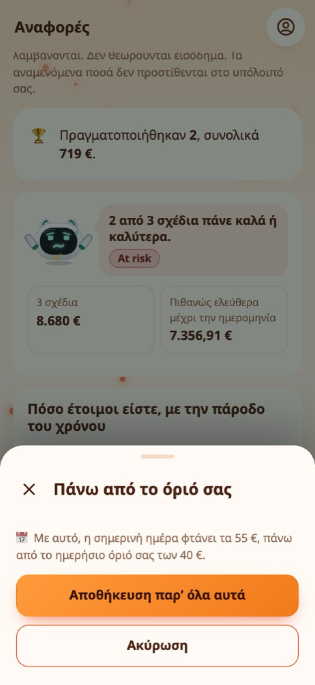
- ✋ Πριν αποθηκεύσετε ένα έξοδο που θα σας βάλει πάνω από το ημερήσιο, εβδομαδιαίο ή μηνιαίο όριό σας, το eFriend ρωτά πρώτα. Το Αποθήκευση παρ’ όλα αυτά είναι πάντα ένα πάτημα μακριά.
- ⚠️ Στην Αρχική, αν τα χρήματά σας πιθανότατα θα τελειώσουν ή θα πέσουν κάτω από το μαξιλάρι σας τους επόμενους δύο μήνες, το eFriend σάς λέει την ημέρα και την πληρωμή που το προκαλεί, και προτείνει να μετακινήσετε την πληρωμή ή ένα σχέδιο λίγες ημέρες αργότερα.
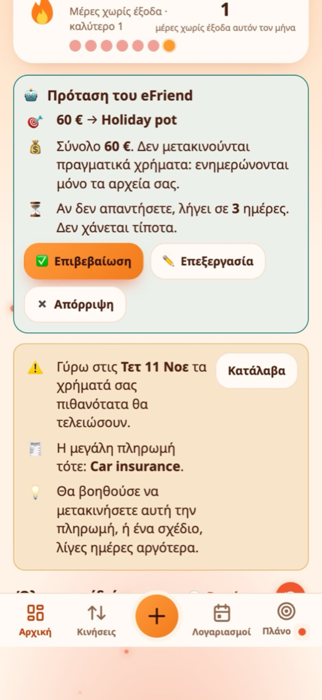
Ιδέες για προϋπολογισμούς#
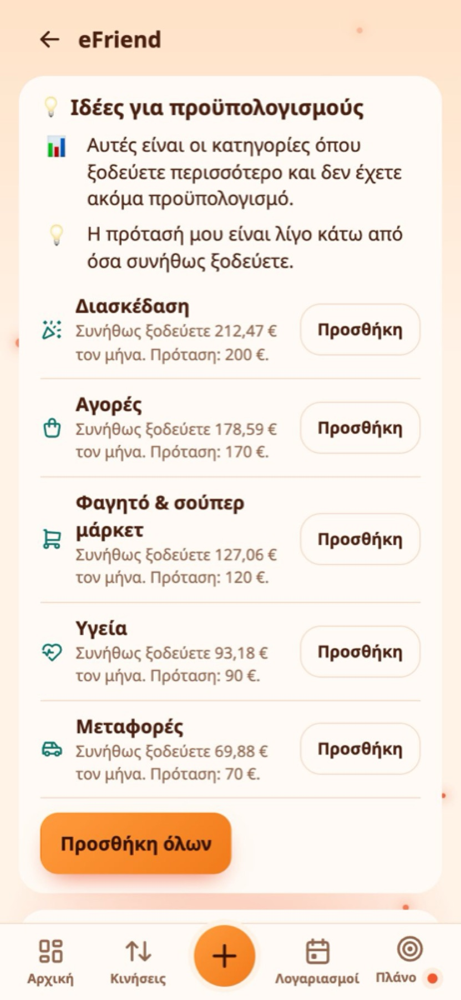
Μετά από περίπου έξι εβδομάδες ιστορικού, η σελίδα του eFriend προτείνει προϋπολογισμούς για τις κατηγορίες όπου ξοδεύετε περισσότερο και δεν έχετε ακόμα προϋπολογισμό, λίγο κάτω από όσα συνήθως ξοδεύετε. Πατήστε Προσθήκη για έναν ή Προσθήκη όλων.
Βοήθεια με τους στόχους σας#
Αν κρατάτε στόχους αποταμίευσης, το eFriend μπορεί να βοηθήσει να χρηματοδοτηθούν. Επιλέξτε λειτουργία στη σελίδα του eFriend:
- 💡 Πρόταση: δείχνει τι είναι ασφαλές να μετακινηθεί.
- 🙋 Ρώτα πρώτα: προτείνει, και μια πρόταση χωρίς απάντηση λήγει μετά από 3 ημέρες.
- 🤖 Αυτόματα: καταγράφει τις μετακινήσεις για εσάς. Με λιγότερο από περίπου έναν μήνα ιστορικό, σας προειδοποιεί πρώτα.
Σε καμία λειτουργία δεν μετακινούνται πραγματικά χρήματα. Είναι σύστημα παρακολούθησης που ενημερώνει τις εγγραφές σας.
Αναφορές#
Το Αναφορές → eFriend δείχνει πόσο έτοιμοι ήσασταν για κάθε σχέδιο με τον καιρό, με ένα σημάδι κάθε φορά που αλλάξατε κάτι και πώς κινήθηκε η γραμμή.
Ερωτήσεις#
Δίνει το eFriend οικονομικές συμβουλές; Όχι. Είναι ένας βοηθός που κάνει αριθμητική στις δικές σας εγγραφές. Δεν βλέπει την τράπεζά σας και οι απαντήσεις του είναι τόσο καλές όσο οι πληροφορίες στο Expenity.
Γιατί δεν πρότεινε ημερομηνία; Επειδή καμία ημέρα στους επόμενους 4 μήνες δεν κρατά τα χρήματά σας ασφαλή. Ανοίξτε την εξήγηση: σας λέει το γιατί και τι θα βοηθούσε.
Μπορώ να το απενεργοποιήσω; Ναι, από το Περισσότερα → Κάντε το δικό σας → Δυνατότητες. Τα δεδομένα σας μένουν.
Χρειάζεστε ακόμα βοήθεια; Δείτε τις FAQ, ή ρωτήστε στο GitHub.